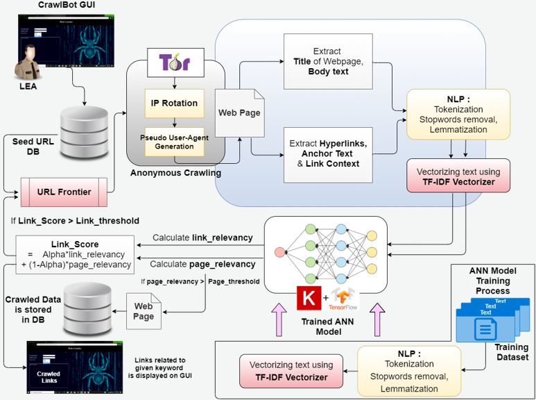

CrawlBot
A Domain-Specific Pseudonymous Crawler

1) Proposed a web crawler framework capable of seamlessly crawling the Surface Web as well as the Dark Web (predominantly TOR) within a single crawl to extract information related to child and woman abuse
2) This project was done under the guidance of Center of Excellence, VJTI
3) Authored and published a paper on the same in International Conference on Cybersecurity in Emerging Digital Era in August 2021, Volume 1436, DOI: 10.1007/978-3-030-84842-2_7